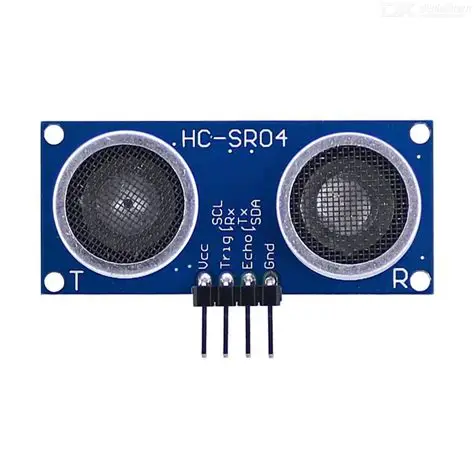
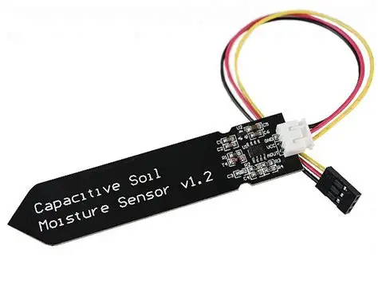
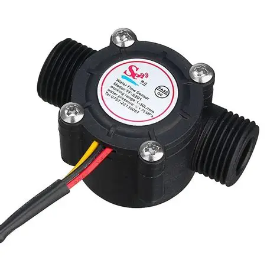

O que é a Internet das Coisas (IoT)?
A Internet das Coisas, do inglês Internet of Things (IoT), é o conceito que descreve a conexão de objetos físicos — sensores, máquinas, equipamentos e dispositivos em geral — à internet, permitindo que eles coletem, troquem e analisem dados em tempo real. Na indústria, isso significa que máquinas e robôs deixam de operar de forma isolada e passam a se comunicar entre si e com sistemas de gestão, formando redes inteligentes de produção.
Na prática: um sensor de temperatura instalado em um robô pode enviar dados continuamente para um sistema de monitoramento, permitindo prever falhas antes que elas aconteçam.
O que é Robótica Industrial?
Robótica industrial é a área da engenharia que projeta, constrói e programa robôs destinados à execução de tarefas dentro de ambientes de produção, como linhas de montagem, embalagem, soldagem e manuseio de materiais. Esses robôs são capazes de repetir movimentos com alta precisão, velocidade e consistência, substituindo ou auxiliando o trabalho humano em tarefas repetitivas, perigosas ou de alta exigência técnica.
A importância da automação industrial
A automação industrial é responsável por aumentar a produtividade, reduzir custos operacionais, diminuir erros humanos e melhorar a qualidade dos produtos finais. Com a chegada da Indústria 4.0, a automação deixou de ser apenas mecânica e passou a incorporar inteligência digital: sensores, softwares e redes de comunicação que tornam as fábricas mais flexíveis, eficientes e capazes de tomar decisões em tempo real.
- Redução de custos e desperdícios de produção;
- Aumento da precisão e da qualidade dos produtos;
- Maior segurança para os trabalhadores;
- Produção contínua, com menos paradas e falhas.
A relação entre Robótica e IoT
Quando um robô industrial é conectado a uma rede IoT, ele deixa de ser apenas um braço mecânico programado e passa a ser um agente inteligente dentro do sistema produtivo. Sensores acoplados ao robô coletam dados de posição, vibração, temperatura e desempenho, que são enviados para sistemas de supervisão (SCADA), plataformas em nuvem e softwares de manutenção preditiva. Essa integração permite monitorar, ajustar e otimizar a produção em tempo real, caracterizando o conceito de fábrica inteligente da Indústria 4.0.
Modelos de Robôs Industriais
Conheça os principais tipos de robôs utilizados em processos produtivos automatizados. Clique em cada card para acessar informações técnicas detalhadas, aplicações e exemplos de fabricantes.

Robô Cartesiano
Movimenta-se em três eixos lineares (X, Y, Z), ideal para tarefas de precisão como pick and place e usinagem.
Ver detalhes
Robô SCARA
Braço com juntas rotativas horizontais, muito usado em montagem eletrônica e tarefas de alta velocidade.
Ver detalhes
Robô Articulado
Possui múltiplas juntas rotativas, semelhante a um braço humano, com alta flexibilidade de movimento.
Ver detalhes
Robô Cilíndrico
Combina movimento rotacional na base com deslocamento linear vertical e radial.
Ver detalhes
Robô Delta
Estrutura paralela suspensa, conhecida pela altíssima velocidade em tarefas de separação e embalagem.
Ver detalhes
Robô Polar
Também chamado esférico, utiliza coordenadas polares para alcançar grandes áreas de trabalho.
Ver detalhes
Robô Colaborativo (Cobot)
Projetado para atuar lado a lado com humanos, com sensores de segurança e fácil programação.
Ver detalhesSensores para Automação e IoT
Os sensores são os órgãos dos sentidos da fábrica inteligente: são eles que transformam grandezas físicas — temperatura, luz, distância, corrente, vazão — em dados digitais que podem ser lidos por microcontroladores, enviados para a nuvem e usados na tomada de decisão. Conheça a seguir dez sensores muito utilizados em projetos de automação industrial e de Internet das Coisas.

DHT22 (AM2302)
Temperatura e UmidadeSensor digital que mede temperatura e umidade relativa do ar com boa precisão.
Ver detalhes
DS18B20
TemperaturaTermômetro digital 1-Wire com endereço único, ideal para líquidos e redes de sensores.
Ver detalhes
BH1750
LuminosidadeSensor I2C que entrega a intensidade luminosa já convertida em lux.
Ver detalhes
HC-SR04
DistânciaSensor ultrassônico que mede distância pelo tempo de voo do som, sem contato.
Ver detalhes
PIR HC-SR501
MovimentoDetecta a movimentação de pessoas pela radiação infravermelha do calor corporal.
Ver detalhes
MQ-2
GásSensor semicondutor para fumaça e gases combustíveis como GLP, metano e hidrogênio.
Ver detalhes
Umidade do Solo (Capacitivo)
UmidadeSonda resistente à corrosão usada em irrigação automatizada e agricultura de precisão.
Ver detalhes
YF-S201
Fluxo (Vazão)Medidor de vazão de água por turbina e efeito Hall, com saída em pulsos.
Ver detalhes
ACS712
Corrente ElétricaMede corrente contínua e alternada por efeito Hall, com isolação galvânica.
Ver detalhes
MFRC522
RFIDLeitor RFID de 13,56 MHz para controle de acesso e rastreabilidade de peças.
Ver detalhes